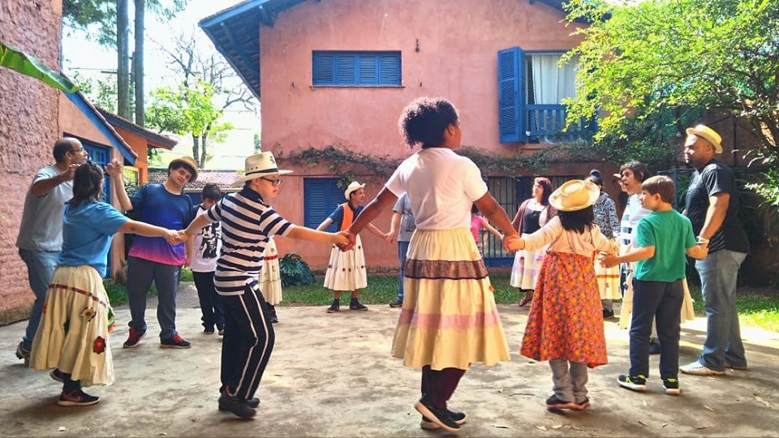
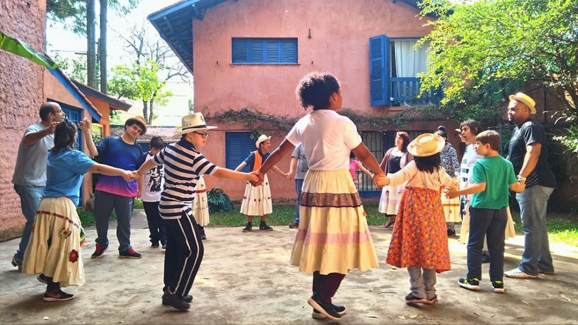
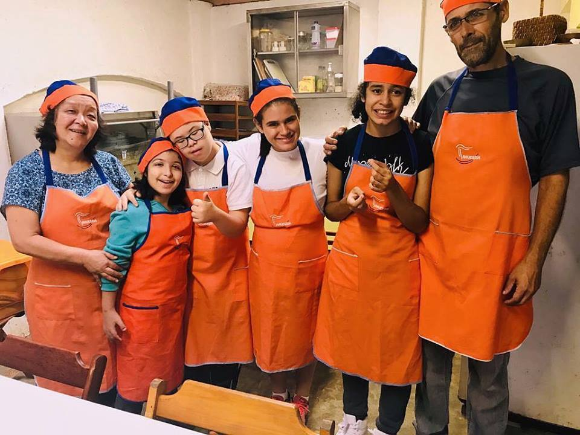
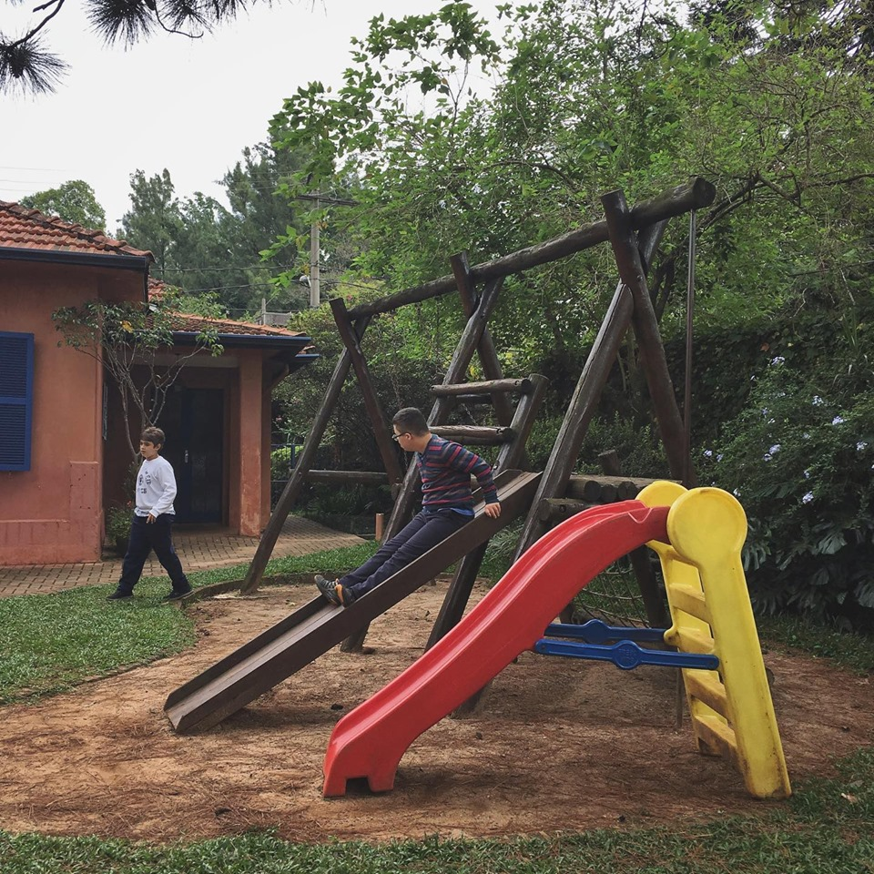
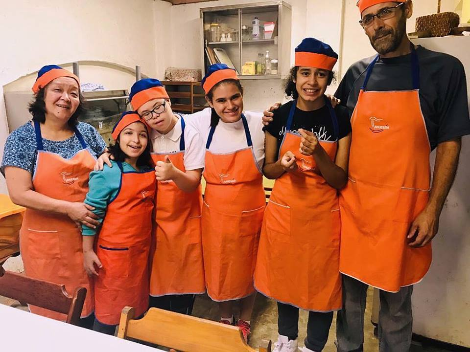
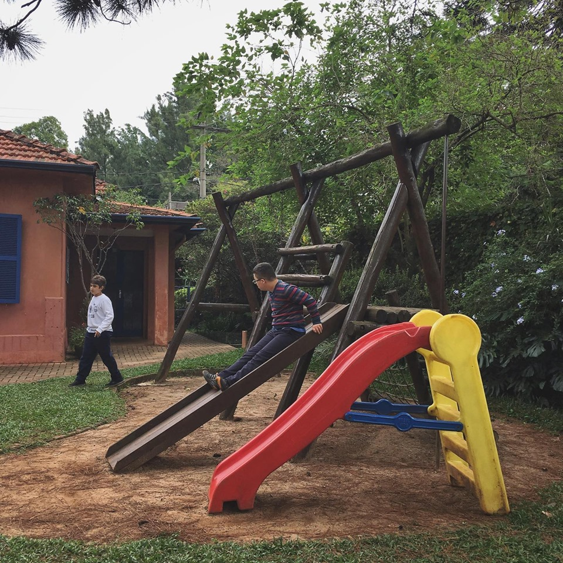

A Associação Travessia foi fundada em Agosto de 1998 por um grupo de pais que estava em busca de um espaço educativo onde seus filhos pudessem desenvolver todas as suas habilidades. Eles, apoiados por um movimento terapêutico de orientação antroposófica, criaram o Núcleo de Pedagogia Waldorf Especial, uma entidade filantrópica sem fins lucrativos que trabalha pela educação e bem estar de seus alunos.
A instituição
Acolhemos crianças, jovens e adultos com variados perfis socioeconômicos e em muitos casos o estudo e terapias são patrocinados por doações de sócios-amigos, empresas e instituições de apoio. Adicionalmente, promovemos diversos eventos no decorrer do ano para ajudar a custear o trabalho da instituição.
A Associação Travessia conta com o Núcleo de Terapia Social cujo trabalho tem por objetivo oferecer possibilidades de desenvolvimento pessoal, convívio, integração e inserção social. Durante o período que os alunos passam na Travessia são oferecidos, também, atendimentos terapêuticos de apoio, definidos para cada aluno após análise da necessidade individual realizada pela equipe composta por médico especializado, professores e terapeutas.
Nossos Alunos
Atendemos crianças, jovens e adultos agrupados em classes de número reduzido, tendo como critério sua faixa etária. O atendimento é diferenciado para cada aluno, de acordo com suas capacidades.
O objetivo
O objetivo da Travessia é oferecer aos alunos a oportunidade de ter uma educação e um aprendizado especial segundo o currículo Waldorf, em classes de até 8 alunos, levando sempre em consideração as suas necessidades individuais no âmbito social, emocional e espiritual.
Nosso Espaço
Contamos com um espaço preparado para atender nossas crianças e jovens
Salas de aula amplas e arejadas;
Salas de Euritmia, Artes, Música e Informática;
Salão de eventos;
Sala para Massagem;
Sala de banhos terapêuticos;
Oficina de Marcenaria;
Horta;
Sala de ginástica coberta;
Miniquadra esportiva;
Refeitório;
Playground com tanque de areia, balanço e área verde com muito espaço livre para atividades motoras;

 


 


